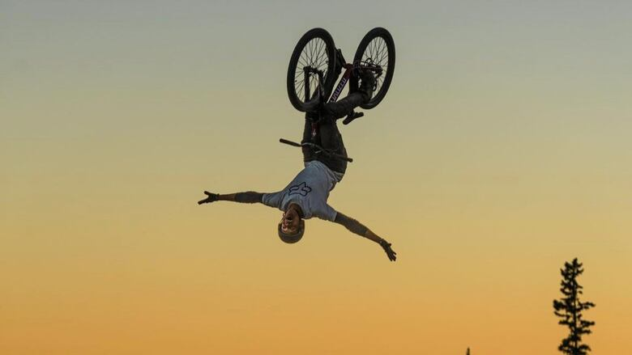

KEON O'BRIEN
Professional Slopestyle MTB Athlete


Professional Slopestyle MTB Athlete



Keon O'Brien is a professional slopestyle mountain bike rider known for his world-first tricks, progression-focused videos, and contests on the FMB World Tour. Competing internationally since 2023, his sights are set on the FMB Diamond Series.
A world's first doesn't happen by accident. It's the result of vision, precision, and the kind of dedication that doesn't show up in highlight reels. These moments are built trick by trick, crash by crash—through quiet work and constant refinement. When it all lines up, it's more than just a clip. It's a new meta.
Keon lives for this process—pushing boundaries, redefining what's possible. And he's just getting started.
From short-form edits to full brand campaigns, Keon creates riding-based content that moves. Whether it's product integration, behind-the-scenes storytelling, or raw progression clips, every piece is built to capture attention and hold it.
Keon coaches riders from first-time jumpers to advanced competitors. Sessions focus on jumping technique, bike control, and building the confidence to push your riding to the next level.
Keon partners with brands that align with his riding, his audience, and his vision. From product integrations to event appearances, content campaigns to long-term athlete partnerships — if you're looking for someone who brings energy, authenticity, and reach, let's talk.